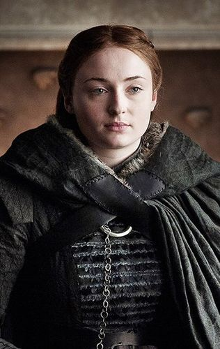
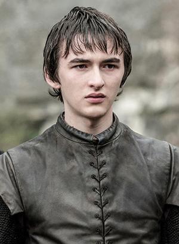

Direwolves

The North Remembers
The North is the one of 7 kingdoms in Westeros and the biggest one. the "STARKS" has ruled the north for 200 years. it's famous for loyality and stubborness which is acquired from their rulers. The Dire-wolf is the stark's sigil famous for it's fiery and loyality. their house words are "WINTER IS COMING".we'll have a look at the dire-wolves of the stark-kids of present era.
Robb-Greywind


Jon-Ghost


Sansa-Lady

Arya-Nymeria


Bran-Summer

Rickon-Shaggydog